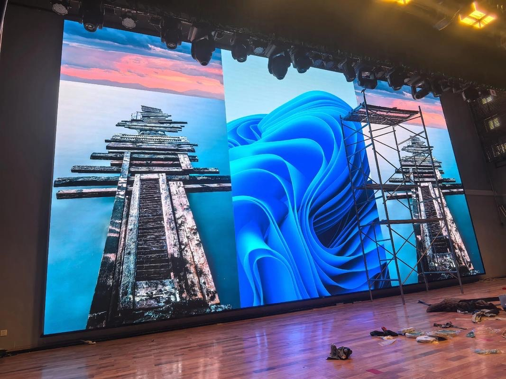

A conference hall or auditorium is a room with a single, dominant sightline. Everyone in the audience looks the same way, at the same screen, and the experience stands or falls on whether the person in the last row can read the slide. That single-direction geometry separates hall design from a meeting room fit-out, where several small displays may serve several groups at once.
The main stage screen is usually the largest single element in the room. For a hall seating several hundred people, the screen has to carry a keynote slide, a live camera feed, and sometimes a speaker's presentation running simultaneously in windows. Because it must do all three without visible compromise, hall designers treat the screen as the anchor of the technical fit-out, not an add-on bought after the audio.
LED has displaced projection in these rooms for a practical reason. A conference hall is rarely dark; sessions are filmed, notes are taken, and house lights stay partly up so the audience can see each other. In that environment a projector's image washes out while an LED wall holds its contrast, and the on-camera result for a webcast is far cleaner.
The role of the screen also stretches beyond the session itself. Between talks it may show sponsor loops, a countdown, room branding, or a live social feed, and during breaks it becomes signage for the next session. A hall screen that only ever shows slides is leaving most of its value unused.
This guide covers how to size the main screen, how far back viewers can read it, how it should work with stage lighting and cameras, and what to plan for in the control room behind it.
The governing rule for a hall screen is the multiple of screen height. For general presentation content, the back row should sit no further than about six times the screen height from the screen. A hall where the last seat is eighteen metres back therefore needs a screen roughly three metres tall, which at 16:9 is around a 220-inch diagonal. Smaller screens force the back rows to rely on the audio alone.
Text size compounds the height rule. If the smallest line of a slide must be readable from the back, the presenter has to use a font large enough that the projected character height is a set number of millimetres at the rear seat. A brief that tells speakers the minimum font size is a cheap way to protect the audience experience, and it is often written into a venue's technical rider.
Vertical sightlines are just as important as distance. The bottom edge of the screen has to clear the heads of everyone in front, which in a flat-floor hall means raising the screen above the audience, while in a raked auditorium the slope does the work. Nothing annoys a hall audience faster than a screen whose lower third is blocked by the row ahead.
Side seats matter in a wide hall. A viewer near the wall sees the screen at a steep horizontal angle, and on an LED wall that angle reduces effective brightness and can shift colour slightly. Keep the horizontal viewing angle within about 60 degrees of centre, and where the room is very wide, consider a second screen rather than one impossibly large one.
Front rows need protection too. A viewer a metre from a three-metre screen sees individual pixels and heavy brightness; a pitch fine enough for the rear also looks crisp up close, and a low-brightness mode keeps the front seats comfortable. Planning for both ends of the room is what makes a hall screen usable by everyone.
| Seats | Screen Height | Diagonal | Suggested Pitch | Back Row Distance |
|---|---|---|---|---|
| 100 - 200 | 2.0 - 2.5 m | 150 - 200 inch | P2.6 - P3.9 | Up to 12 m |
| 200 - 400 | 2.5 - 3.5 m | 200 - 280 inch | P2.6 - P3.9 | Up to 18 m |
| 400 - 700 | 3.5 - 5.0 m | 280 - 400 inch | P3.9 - P4.8 | Up to 24 m |
| 700 - 1200 | 5.0 - 7.0 m | 400 - 550 inch | P4.8 - P6.5 | Up to 36 m |
| Over 1200 | 7.0 m + | 550 inch + | P6.5 - P10 | Over 40 m, multiple screens |
A hall screen has to survive being filmed. When a camera points at the stage, it sees both the presenter and the screen, and their brightness must be close enough that the camera operator is not forced to expose for one and blow out the other. A screen that is far brighter than the lit stage will clip to white on the webcast; a screen that is too dim turns grey and muddy.
Refresh rate is the technical guard against camera artefacts. At refresh rates below the camera's shutter, scanning lines and flicker appear on the recording even though the room looks fine. Indoor refresh above 3840 Hz removes that risk almost entirely, which is why it is a baseline requirement for any hall that will be streamed or recorded.
Content windows are a design decision, not an afterthought. A single full-frame image is simplest, but most conferences want a presenter camera, a slide, and often a lower-third name strap at once. A video processor with multiple scalable layers and keying lets the operator build that composite without a separate switcher, and storing preset layouts means the next session starts with one button.
Stage lighting and the screen must be designed together. Bright washes aimed at the screen kill its contrast, and a very bright screen spills blue light onto the stage and into the audience's eyes. Placing the screen slightly upstage, using louvers or a hood where possible, and dimming the screen for lights-down moments all help the two coexist.
Audio is the partner system. The hall's loudspeakers should be aimed at the audience and away from the screen structure, and any microphone and speaker cabling should be routed in the same containment as the screen's data path. A hall that looks immaculate but has cables draped under the stage apron is not finished.
| Requirement | Target Value | Why It Matters | Notes |
|---|---|---|---|
| Refresh rate | 3840 Hz or higher | Stops camera flicker and banding | Essential for streamed sessions |
| Peak brightness | 800 - 1500 nits | Survives house lights and camera | Match to stage lighting level |
| Grayscale depth | 14-bit or higher | Smooth gradients on large area | Avoids banding on title cards |
| Pixel pitch | P2.6 - P4.8 typical | Readable from the back row | Finer pitch for smaller halls |
| Viewing angle | 60 degrees off centre | Side seats stay bright | Beyond this, add a second screen |
Behind every working hall screen is a control position where the session is run. The processor, media server, and source switcher usually live there, connected to the screen over a single fibre or Cat cable run. Keeping the source equipment in the control room rather than at the stage keeps laptops, switchers, and operators out of the audience's view.
Redundancy is what separates a professional hall from an ad-hoc one. A keynote that fails on stage is a reputational event, so signal paths are often duplicated and the power supply is fed from more than one source where the budget allows. A spare receiving card and a spare module kept in the control room turn a failure into a two-minute interruption rather than a session-ending one.
Changeover between sessions is the operational pressure point. Conferences run to a schedule measured in minutes, and the technical team has to switch branding, slide decks, and camera sources between speakers. Preset scenes on the processor, a labelled input matrix, and a rehearsed changeover routine keep the room on time when the schedule slips.
Spares and documentation belong in the room. A wall map showing which cabinet covers which pixels, a spare module, and a printed recovery procedure let a venue technician handle a routine fault without calling the integrator. That single folder prevents a minor issue from becoming an emergency.
Finally, commission the hall with a full rehearsal. Run a real slide deck at working brightness, film it, and play the recording back before the first live event. Problems that are invisible to the eye, such as refresh artefacts, appear immediately in the recorded footage, and it is far cheaper to find them during commissioning than during an opening keynote.
Asia Vision Technology supplies indoor LED walls for auditoriums and conference halls with refresh above 3840 Hz, brightness from 800 to 2500 nits, and per-cabinet calibration tuned for camera work. Our CV-PRO and COB platforms keep gradients smooth on the large canvases a keynote screen demands.
Displays carry CE, FCC, and RoHS certification and ship in 15 to 20 working days with a 3-year standard warranty. We provide a wall map, spare-part guidance, and integration notes for the control room so the venue can run its own events confidently from day one.

For this requirement our range covers it directly: the RH-PRO fine-pitch COB (flagship, full redundancy) and the COB CV-PRO series (Ultra-HD fine pitch).